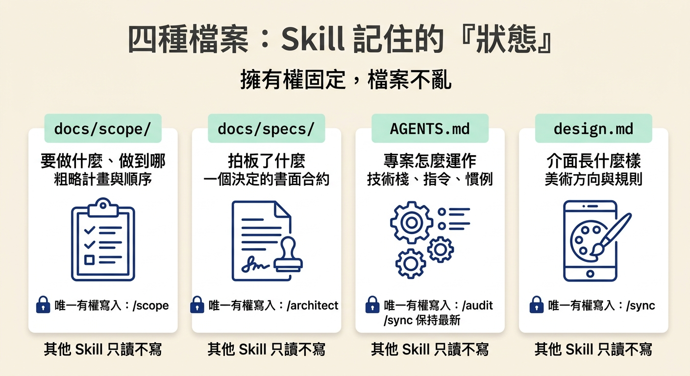
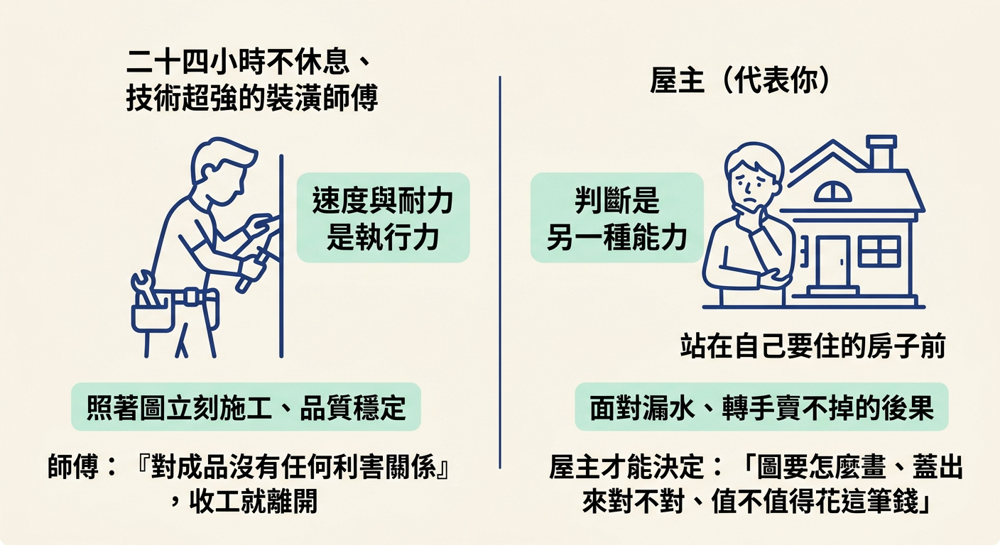
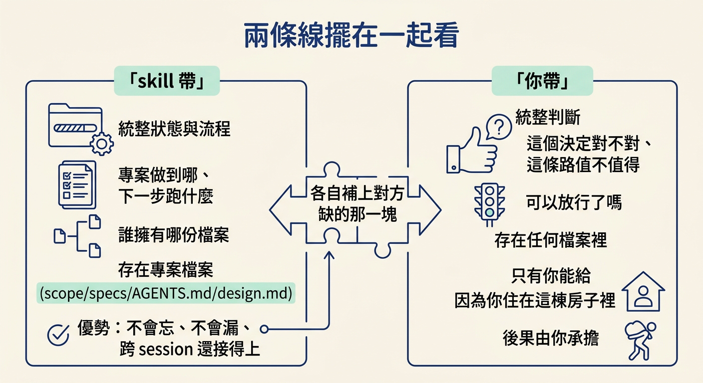

說出「skill 帶狀態與流程、人帶判斷」這條分工線，並解釋為什麼 agent 跑得再快、再不知疲倦，也取代不了判斷——因為它對結果沒有任何利害關係。
想像你昨天把一個功能跑完整套流程，今天早上打開一個全新的對話，什麼都沒跟它說。理論上它應該一片空白，但你請它接著做，它卻知道上一個功能做到哪、哪個決定還沒拍板、專案用的是哪套指令。
這些東西，不是你昨晚留在對話裡的。它們留在磁碟上的檔案裡。整套 workflow 能跨 session、跨人、跨天，靠的正是把重要狀態寫進檔案，而不是靠某個對話一直開著。
不過這裡有另一半，常常被忽略：檔案能記住「做到哪、下一步是什麼」，卻記不住「這件事到底該不該做」。而後面這一半，才是整套流程最後真正交到你手上的東西。這一節要把那條分工線畫清楚——skill 帶狀態與流程，人帶判斷。
先看 skill 這一側。九個 skill 各管一個階段，但它們真正共同的產物，是把「狀態」與「流程」固定成檔案。
狀態指的是專案現在長什麼樣、做到哪裡。要建哪些功能、先後順序如何，寫在 scope 裡；某個決定拍板了沒、內容是什麼，寫在 spec 裡；專案用什麼技術棧、怎麼跑指令，寫在 context 檔裡。流程指的是每個階段該做什麼，以及誰負責寫哪份檔案、誰只能讀不能改。
這些設計加起來的結果是：你可以停在任何一個交接點，清掉 session，隔天從磁碟接回來，什麼都不會掉。課程的 workflow 指南把這件事講得很直白：
The important state lives in files in your repository, not in a chat, so the work survives across sessions and is shared with your whole team.
翻成白話：重要的狀態活在專案檔案裡，不活在對話裡，所以工作能跨 session 存活，也能讓整個團隊共用。
把狀態攤開來看，其實就是專案裡的這四種檔案：
docs/scope/ ← 要做什麼、做到哪：粗略計畫與順序 docs/specs/ ← 拍板了什麼：一個決定的書面合約 AGENTS.md ← 專案怎麼運作：技術棧、指令、慣例 design.md ← 介面長什麼樣：美術方向與規則
這四種檔案各有明確的主人與生命週期。scope 的計畫由 /scope 建立、/develop 推進；spec 的內容只有 /architect 能寫，/develop 只被允許移動狀態那一行；context 檔由 /audit 建立，其他每個 skill 都讀它，再由 /sync 保持最新。擁有權固定，所以這些檔案不會隨時間變成誰都能亂改的一團泥。

換句話說，skill 幫你扛下的，是「記得專案現在到哪裡、下一步該跑哪一個階段」這種事。這一側它做得比人可靠，因為它不會忘記、不會漏勾一個里程碑、也不會因為請假兩天就接不上。
但檔案裡永遠不會寫著一句話：「這個建議適合你的產品。」它也不會寫著：「現在這個對話該清掉了。」這類問題的答案不在任何檔案裡，因為它根本不是「狀態」，而是判斷。
判斷要回答的是另一組問題：這條路對不對、這個風險值不值得冒、這個東西真的準備好可以給使用者了嗎。技術棧的比較可以交給 skill 做，但最後拍板「我們就用這個」，是你的工作。程式碼可以讓 agent 寫，但「這段邏輯放進我們的產品情境，合不合理」是你的工作。
講師用一句話把這條線收得最俐落。當有人問：agent 這麼快，為什麼不乾脆全都交給它？答案是因為它對結果沒有任何利害關係：
The agent just works fast, never gets tired, and it has no stake at all whether what you build is successful, safe, or worth maintaining.
它只是跑得很快、從不喊累，而且你做出來的東西成不成功、安不安全、值不值得維護，對它來說一點差別都沒有。
這裡容易搞混，值得拆開講。速度與耐力是執行力；判斷是決定「要執行什麼、執行出來對不對」。兩者是完全不同的能力，而且第二種恰好是 agent 天生缺的那一種。
打個比方。你請了一位技術超強、二十四小時不休息的裝潢師傅。圖給他，他立刻做出來，品質還很穩。可是房子是你住的，漏水是你頭痛，哪天要轉手賣不掉也是你虧錢。師傅做完就下班了，房子蓋得好不好，跟他沒有任何關係。

所以「圖要怎麼畫、蓋出來對不對、這個裝潢值不值得花這筆錢」，只能你決定。對應到 workflow：skill 負責施工與記錄，你負責決定要蓋什麼、以及蓋出來的東西對不對。agent 不會因為成品有問題而睡不著——這就是「沒有利害關係」的意思，也是它取代不了判斷的原因。
把整個迴圈攤成兩欄，分工就一目了然：
| skill 帶 | 你帶 | |
|---|---|---|
| 負責什麼 | 狀態與流程 | 判斷 |
| 具體內容 | 專案做到哪、下一步跑什麼、誰擁有哪份檔案 | 這個決定對不對、這條路值不值得、可以放行了嗎 |
| 存在哪 | 專案檔案（scope／specs／AGENTS.md／design.md） | 不在任何檔案裡，只有你能給 |
| 為什麼適合 | 不會忘、不會漏、跨 session 還接得上 | 你住在這棟房子裡，後果由你承擔 |
這張表也是提醒：兩邊不是誰取代誰，而是各自補上對方缺的那一塊。skill 補上人會忘、會累、會漏的部分；人補上 agent 完全沒有的部分——在乎。

聽完「人帶判斷」，很容易下一個太快的結論：那我是不是每一步都得停下來自己來一遍，這樣不是很慢嗎？
其實不是。判斷不等於每一行都親自審。每天的日常小改動，你大可放手讓它跑；真正需要你出手的，是少數幾個「一旦錯了、代價就不對稱」的接點。哪些接點是那少數，是這個節點的下一節與最後一節要處理的。
換句話說，這條分工線不是要你變慢，而是要你把注意力花在對的地方。剩下的交給 skill 扛。
這套 workflow 把工作切成兩條線：skill 帶狀態與流程，把專案做到哪、下一步跑什麼、誰擁有哪份檔案，全部固定進專案檔案裡，因此工作能跨 session 與跨人延續；人帶判斷，負責回答「對不對、值不值得、能不能放行」這類檔案沒有答案的問題。agent 跑得再快、再不知疲倦也補不上判斷這一側，因為它對結果沒有任何利害關係——你做的東西成不成功、安不安全，對它沒有差別。
畫出這條線之後，下一個問題自然浮現：一套把判斷留給人的流程，實際上是怎麼設計的？它會不會嘴上說「交給你了」，實際上卻偷偷幫你把決定做掉？下一節要看這套 workflow 的「不做清單」，以及它如何刻意在該停下來的地方停下來。